Notation
The C4 model is notation independent, and doesn’t prescribe any particular notation. That said, you still need to ensure that your diagram notation makes sense, and that the diagrams are comprehensible. A good way to think about this is to ask yourself whether each diagram can stand alone, and be (mostly) understood without a narrative. You can use this short software architecture diagram review checklist to help.
Here are some general recommendations related to notation.
Diagrams
- Every diagram should have a title describing the diagram type and scope (e.g. “System Context diagram for My Software System”).
- Every diagram should have a key/legend explaining the notation being used (e.g. shapes, colours, border styles, line types, arrow heads, etc).
- Acronyms and abbreviations (business/domain or technology) should be understandable by all audiences, or explained in the diagram key/legend.
Elements
- The type of every element should be explicitly specified (e.g. Person, Software System, Container or Component).
- Every element should have a short description, to provide an “at a glance” view of key responsibilities.
- Every container and component should have a technology explicitly specified.
Relationships
- Every line should represent a unidirectional relationship.
- Every line should be labelled, the label being consistent with the direction and intent of the relationship (e.g. dependency or data flow). Try to be as specific as possible with the label, ideally avoiding single words like, “Uses”.
- Relationships between containers (typically these represent inter-process communication) should have a technology/protocol explicitly labelled.
Colours
Although you may see many example diagrams and tools that make use of blue and grey boxes, this isn’t something that is dictated by the C4 model, and you are free to use whatever colours you like! Just make sure that any colour coding is consistent (within and across diagrams) and be careful of things like black and white printers, color blindness, etc.


Diagram key/legend
Any notation used should be as self-describing as possible, but all diagrams should have a key/legend to make the notation explicit. This applies to diagrams created with notations such as UML, ArchiMate and SysML too, as not everybody will know the notation being used.

C4 and UML
Although the example diagrams are created using a “boxes and lines” notation, the core diagrams can be illustrated using UML with the appropriate use of packages, components and stereotypes. The resulting UML diagrams do tend to lack the same degree of descriptive text though, because adding such text isn’t possible (or easy) with some UML tools.
Here are three examples of a system context, container and component diagram for comparison.
| System context diagram | Container diagram | Component diagram |
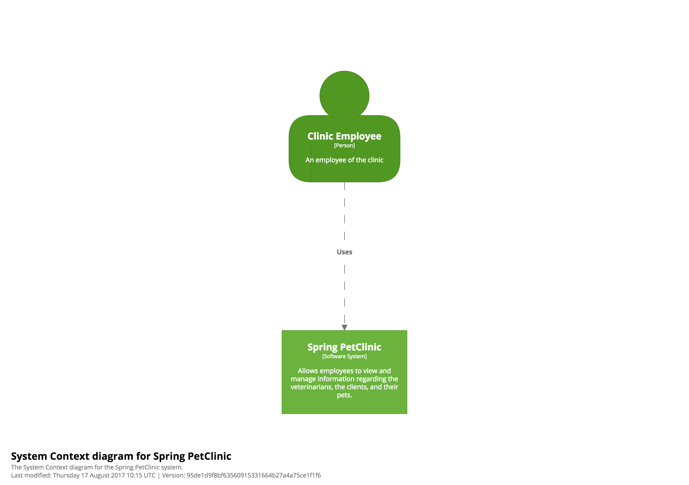 |
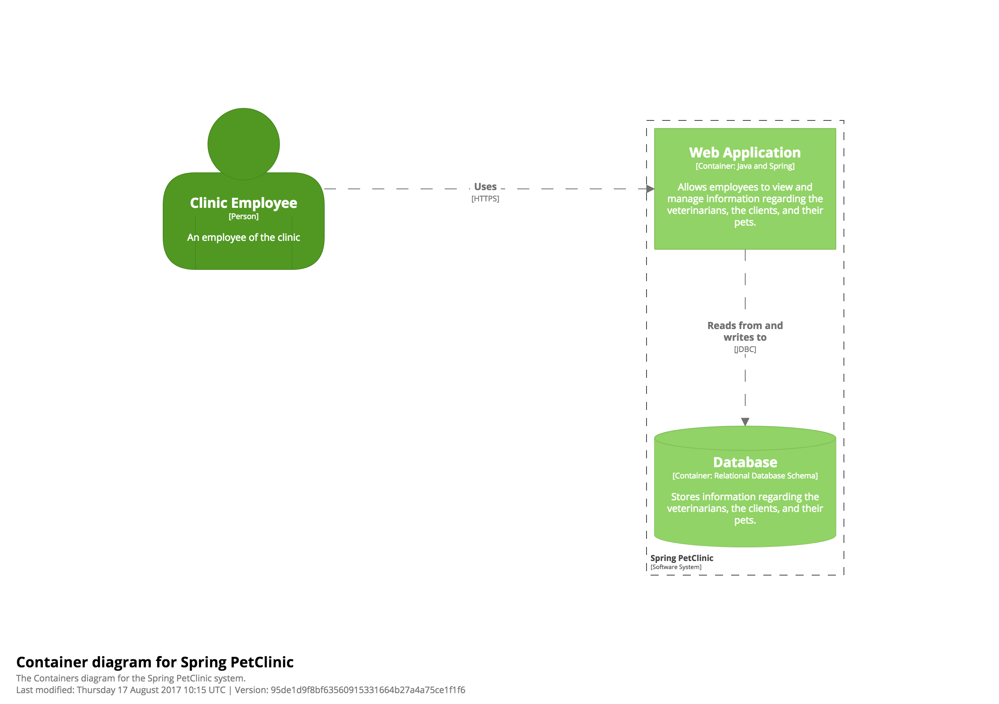 |
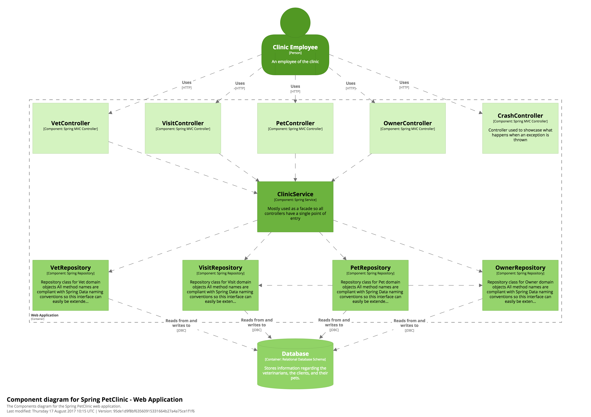 |
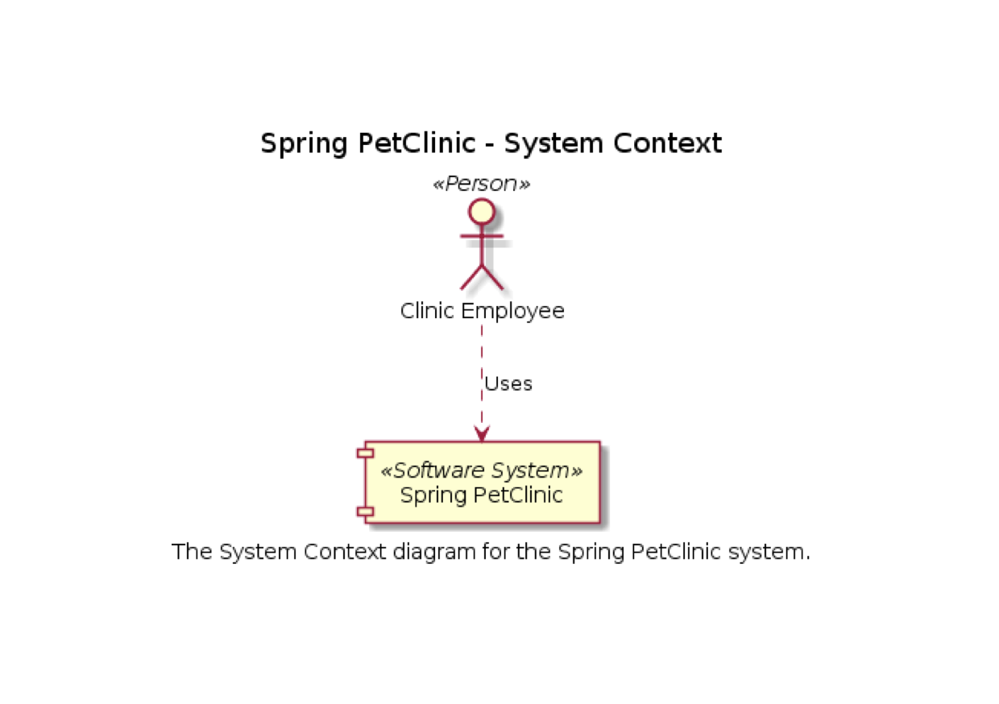 |
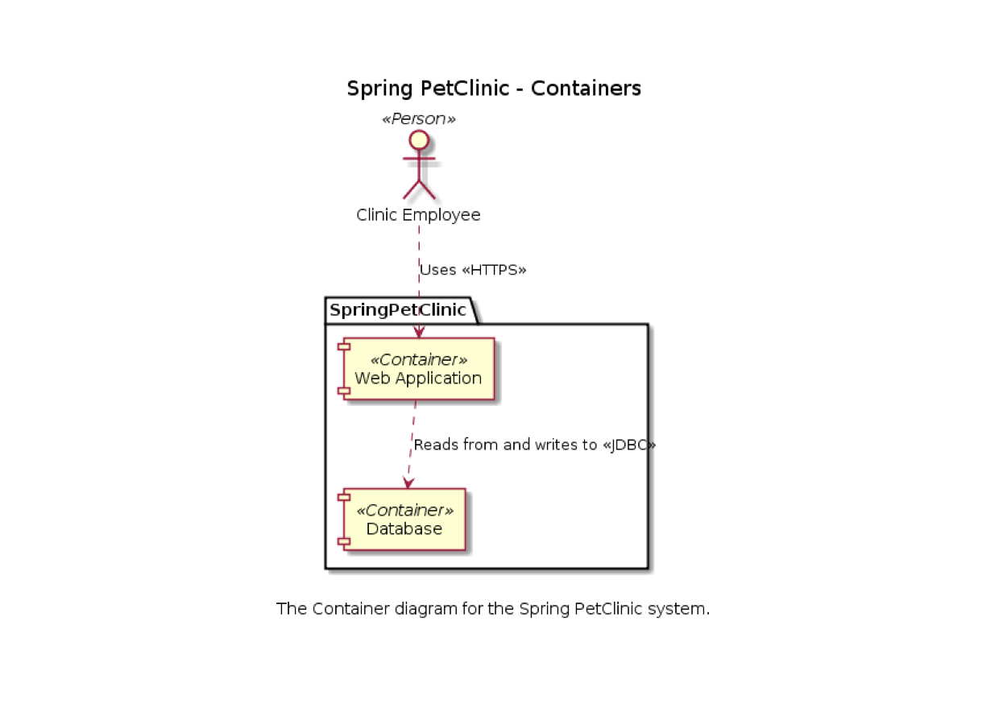 |
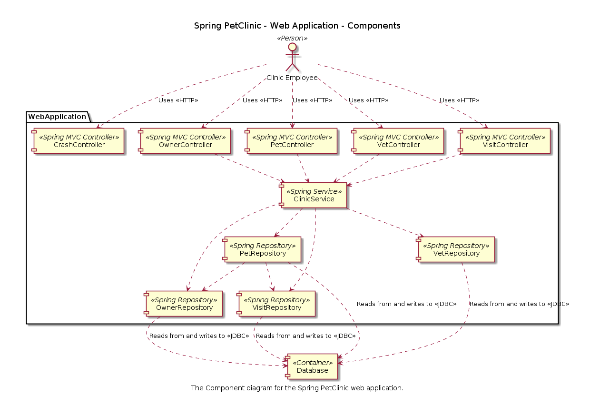 |
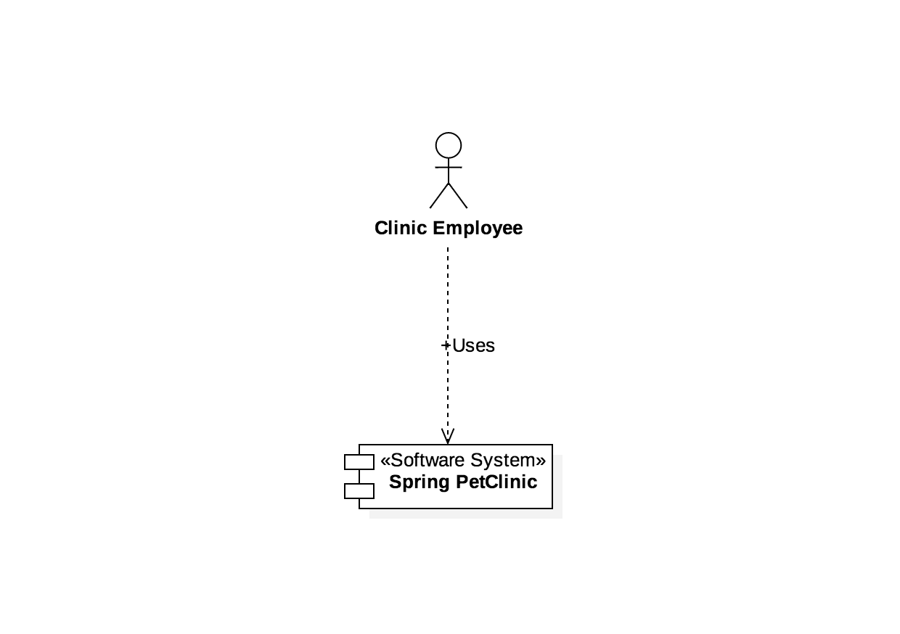 |
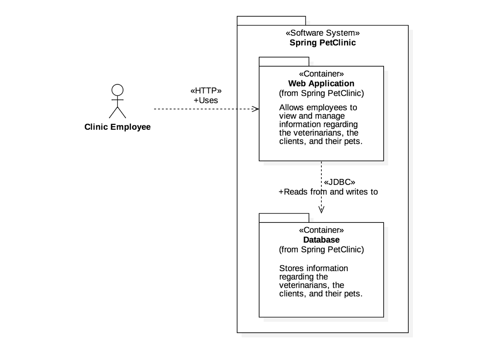 |
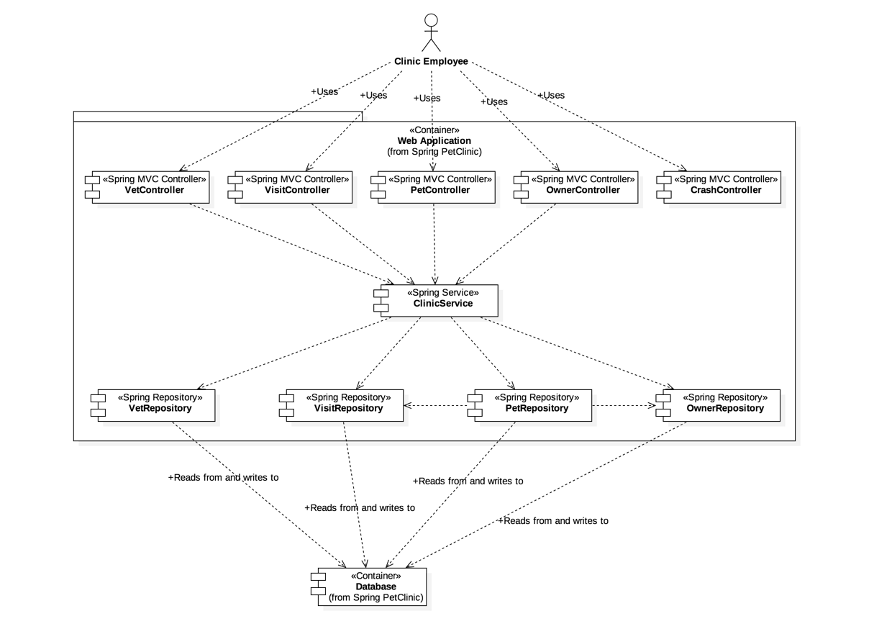 |


C4 and ArchiMate
See C4 Model, Architecture Viewpoint and Archi 4.7 for details of how to create C4 model diagrams with ArchiMate.
Alternative visualisations
Finally, don’t feel that you need to always use a traditional “boxes and arrows” diagram. Although this is usually the default approach, there are other, often interactive, visualisations that can be used to show the same C4 model abstractions in very different ways.
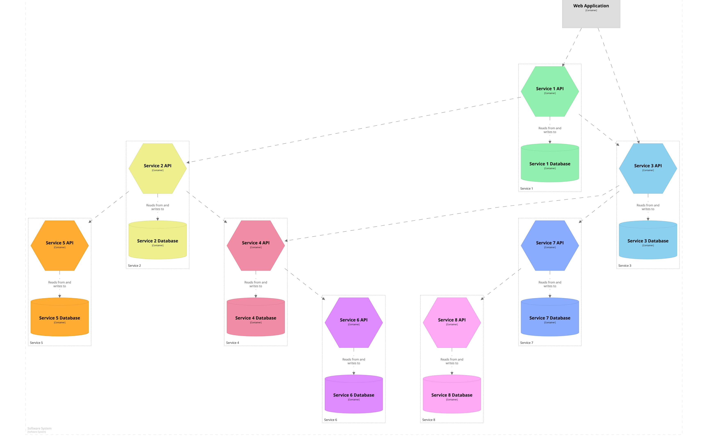 |
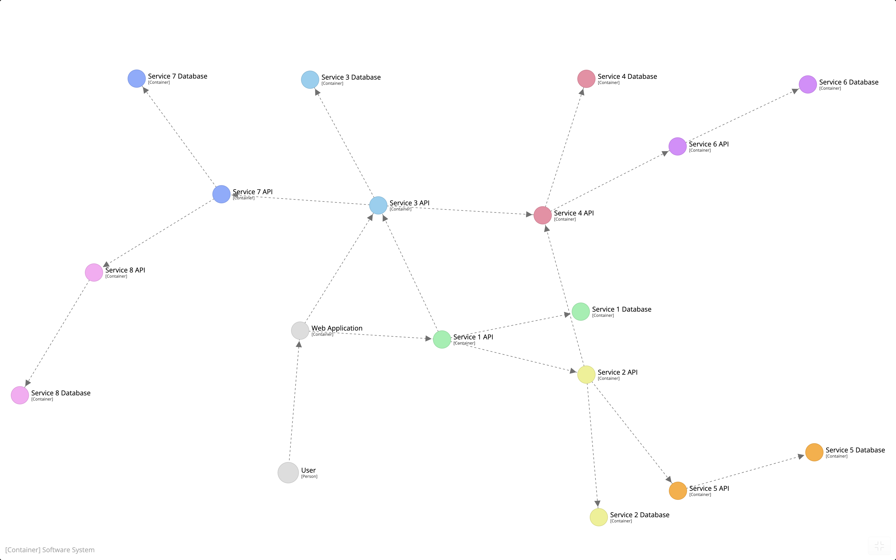 |
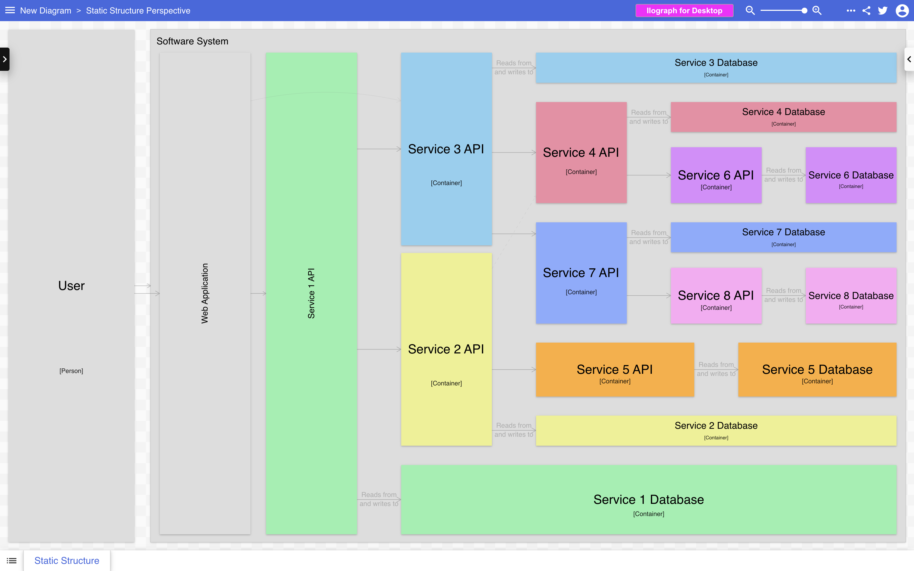 |
| Traditional “boxes and arrows” diagrams are the default approach for documentation and presentations. | A D3.js force-directed graph is a very concise way to visualise larger software architectures, also providing an easy way to explore dependencies. | Ilograph’s interactive diagrams provide a way to selectively zoom in and out, allowing you to explore your entire software architecture model. |